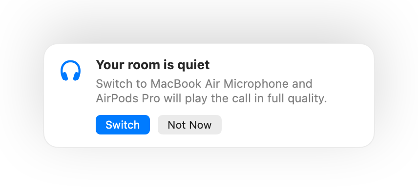

Why AirPods sound worse during calls on a Mac
Join a call with AirPods and the sound suddenly turns flat and muffled. It isn't a fault. While an app uses the AirPods microphone, Bluetooth switches the AirPods to a call mode that plays everything in much lower quality.
The fix is to talk into your Mac's microphone and let the AirPods only play sound. In a quiet room your Mac's mic sounds just as good, and the call plays in full quality again. Muffle notices when your room is quiet and suggests the switch.
Keep full quality in calls
- 1
Install Muffle and leave “Suggest the best mic for the room” on.
- 2
Join your call with AirPods as usual.
- 3
When Muffle says your room is quiet, click Switch.
- 4
If it gets loud later, Muffle suggests the AirPods mic again.

- The switch works when your call app uses the system's default microphone. In Google Meet, Zoom and Teams, pick the default or same-as-system option.
- Stay near your Mac while you use its mic. Muffle only suggests it when it can hear you clearly.
Questions
Why do AirPods sound bad on Mac calls?
Bluetooth can't carry high-quality stereo and your voice at the same time, so AirPods drop to call mode while their mic is in use.
Does Muffle switch microphones by itself?
No. Muffle only suggests the better microphone. Nothing changes until you click Switch.